Pandas: Groupby#
Often we don’t want a single summary for the whole dataset — we want one value per group: the average temperature in each month, the strongest earthquake in each country, the total rainfall in each year. groupby is the tool for exactly this, and it’s one of the most useful things pandas does.
The pattern it follows is called split–apply–combine: split the rows into groups, apply a calculation to each group, then combine the results back together. We’ll build that intuition on two datasets — first grouping earthquakes by country, then grouping a weather station’s daily record by time to build climatologies and anomalies. Along the way we’ll meet groupby’s close relatives resample (grouping by time interval) and rolling (moving-window calculations).
These notes draw on the pandas groupby documentation; the split-apply-combine framing comes from a paper by Hadley Wickham.
Working through this notebook
This page is a Jupyter notebook. Download it using the ⬇ button in the top-right (or copy-paste the cells into a fresh notebook), open it in your environment (JupyterLab on LEAP or Colab), and step through the cells. When you reach a Try it admonition, experiment in your own cells before moving on.
In-class assignment — 10 points
The “Try it” exercises in this notebook are part of your in-class assignment for this section. Complete them in your own copy of the notebook, push it to your week folder, and post the notebook link on the matching Courseworks assignment. (One 10-point assignment covers all the lecture notebooks in this section.)
import numpy as np
from matplotlib import pyplot as plt
plt.rcParams['figure.figsize'] = (12,7)
%matplotlib inline
import pandas as pd
First we read the earthquake data from the previous assignment. Two extra steps set up the rest of the lesson: we derive a country column from the free-text place field, and we split the catalog by magnitude into the larger events (df, magnitude > 4) and the smaller ones (df_small, magnitude < 4), so we can compare the two groups later.
df = pd.read_csv('https://raw.githubusercontent.com/earth-DS-ML/summer_2026/refs/heads/main/lectures_DS/data/usgs_earthquakes_2025.csv', parse_dates=['time'], index_col='id')
df['country'] = df.place.str.split(', ').str[-1]
df_small = df[df.mag<4]
df = df[df.mag>4]
df.head()
| time | latitude | longitude | depth | mag | magType | nst | gap | dmin | rms | ... | place | type | horizontalError | depthError | magError | magNst | status | locationSource | magSource | country | |
|---|---|---|---|---|---|---|---|---|---|---|---|---|---|---|---|---|---|---|---|---|---|
| id | |||||||||||||||||||||
| us6000qkt1 | 2025-06-17 12:00:22.773000+00:00 | -23.1645 | -175.3549 | 10.000 | 4.9 | mb | 22.0 | 166.0 | 6.481 | 0.49 | ... | 206 km SSW of ‘Ohonua, Tonga | earthquake | 15.85 | 1.938 | 0.093 | 36.0 | reviewed | us | us | Tonga |
| us6000qksf | 2025-06-17 09:16:30.483000+00:00 | -23.1181 | -174.9129 | 10.000 | 4.8 | mb | 16.0 | 111.0 | 6.151 | 0.48 | ... | 196 km S of ‘Ohonua, Tonga | earthquake | 14.94 | 1.939 | 0.148 | 14.0 | reviewed | us | us | Tonga |
| us6000qks2 | 2025-06-17 08:36:22.986000+00:00 | 8.2769 | 126.8035 | 34.840 | 5.3 | mww | 100.0 | 67.0 | 1.706 | 1.23 | ... | 42 km ENE of Barcelona, Philippines | earthquake | 7.91 | 3.994 | 0.062 | 25.0 | reviewed | us | us | Philippines |
| us6000qkrz | 2025-06-17 08:13:19.239000+00:00 | 50.6542 | 156.7597 | 91.831 | 4.7 | mb | 55.0 | 152.0 | 2.526 | 0.64 | ... | 44 km E of Severo-Kuril’sk, Russia | earthquake | 10.38 | 7.726 | 0.032 | 287.0 | reviewed | us | us | Russia |
| us6000qks0 | 2025-06-17 08:12:55.629000+00:00 | -32.8812 | -13.2948 | 10.000 | 5.0 | mb | 44.0 | 59.0 | 4.254 | 0.91 | ... | southern Mid-Atlantic Ridge | earthquake | 10.55 | 1.837 | 0.076 | 55.0 | reviewed | us | us | southern Mid-Atlantic Ridge |
5 rows × 22 columns
Before grouping, let’s get oriented — how many large events are in df, and what does the distribution of magnitudes look like?
len(df)
5923
df.mag.plot.hist()
<Axes: ylabel='Frequency'>
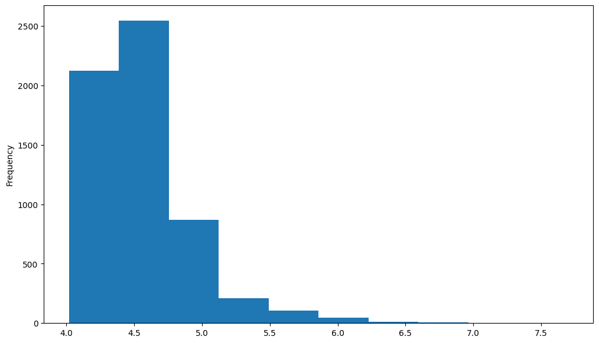
An Example#
What if we wanted to know which country had the most earthquakes? groupby does this cleanly — it groups all rows that share a value, then we can apply an aggregation (here, count) to summarize each group:
df.groupby('country').mag.count().nlargest(20).plot(kind='bar', figsize=(12,6))
<Axes: xlabel='country'>
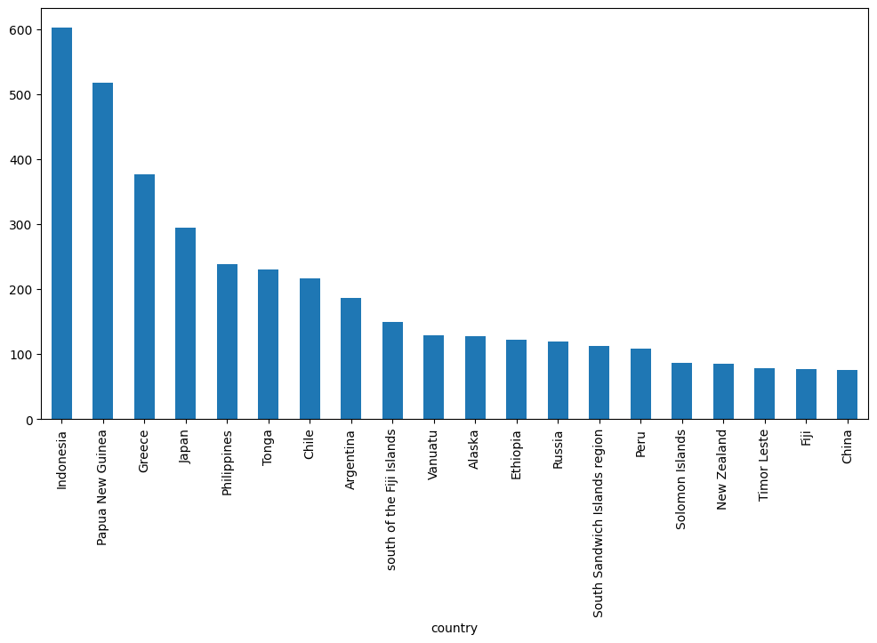
And the same count for the smaller events (df_small, magnitude below 4) — notice how the ranking of countries shifts:
df_small.groupby('country').mag.count().nlargest(20).plot(kind='bar', figsize=(12,6))
<Axes: xlabel='country'>
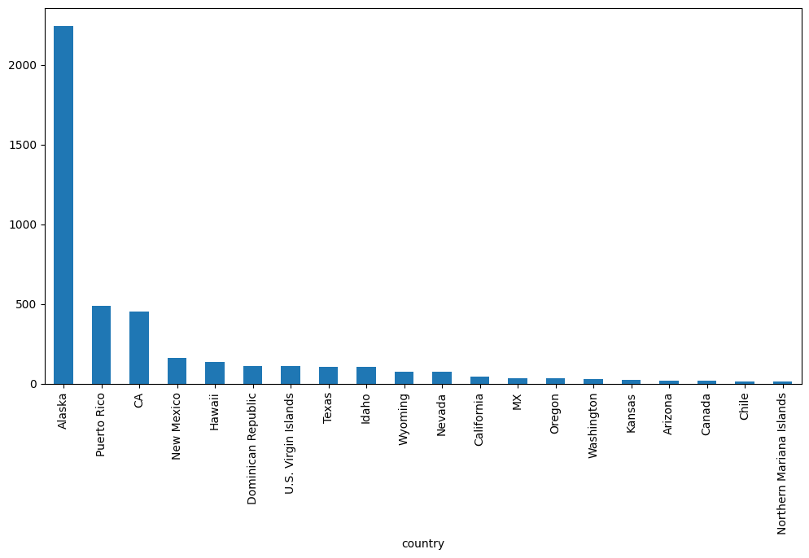
What Happened?#
Let’s break down what groupby actually does. The .groupby(...) call doesn’t immediately compute anything — it returns a GroupBy object that holds the grouping logic. Computation happens when you call an aggregation method on it (.count(), .mean(), .aggregate(...), etc.). This pattern is sometimes called split-apply-combine:
Split the data into groups based on a column or function.
Apply a function (aggregate, transform, or filter) to each group independently.
Combine the results back into a single DataFrame or Series.
We can group by any Series — here, the country column itself:
df.country
id
us6000qkt1 Tonga
us6000qksf Tonga
us6000qks2 Philippines
us6000qkrz Russia
us6000qks0 southern Mid-Atlantic Ridge
...
us6000pll8 Ethiopia
us6000pj3b Libya
us6000pj2q Tonga
us6000pll7 south of the Kermadec Islands
us6000plld Ethiopia
Name: country, Length: 5923, dtype: object
df.groupby(df.country)
<pandas.api.typing.DataFrameGroupBy object at 0x7ff8ab9b3890>
There is a shortcut for doing this with dataframes: you just pass the column name:
df.groupby('country')
<pandas.api.typing.DataFrameGroupBy object at 0x7ff8abb301d0>
The GroupBy object#
When we call groupby, we get back a GroupBy object:
gb = df.groupby('country')
gb
<pandas.api.typing.DataFrameGroupBy object at 0x7ff8ab93b3d0>
The length tells us how many groups were found:
len(gb)
194
All of the groups are available as a dictionary via the .groups attribute:
groups = gb.groups
len(groups)
194
groups.keys()
dict_keys(['2025 Drake Passage Earthquake', 'Afghanistan', 'Alaska', 'Algeria', 'Anguilla', 'Antigua and Barbuda', 'Arctic Ocean', 'Argentina', 'Armenia', 'Ascension Island region', 'Australia', 'Azerbaijan', 'Azores Islands region', 'Bahamas', 'Balleny Islands region', 'Banda Sea', 'Barbados', 'Bolivia', 'Bosnia and Herzegovina', 'Brazil', 'Burma', 'Burma (Myanmar)', 'Burma (Myanmar) Earthquake', 'CA', 'Canada', 'Carlsberg Ridge', 'Cayman Islands', 'Chad', 'Chagos Archipelago region', 'Chile', 'China', 'Colombia', 'Costa Rica', 'Croatia', 'Democratic Republic of the Congo', 'Dominica', 'Dominican Republic', 'Drake Passage', 'Easter Island region', 'Ecuador', 'Ecuador region', 'El Salvador', 'Eritrea', 'Ethiopia', 'Federated States of Micronesia', 'Federated States of Micronesia region', 'Fiji', 'Fiji region', 'Georgia', 'Greece', 'Greenland Sea', 'Guadeloupe', 'Guam', 'Guatemala', 'Hawaii', 'Honduras', 'Iceland', 'Iceland region', 'Idaho', 'India', 'India region', 'Indian Ocean Triple Junction', 'Indonesia', 'Iran', 'Italy', 'Japan', 'Japan region', 'Kazakhstan', 'Kermadec Islands region', 'Kuril Islands', 'Kuwait', 'Kyrgyzstan', 'Libya', 'MX', 'Macquarie Island region', 'Madagascar', 'Malawi', 'Mariana Islands region', 'Martinique', 'Mauritius', 'Mauritius - Reunion region', 'Mexico', 'Micronesia', 'Mid-Indian Ridge', 'Mongolia', 'Montenegro', 'Morocco', 'Nepal', 'New Caledonia', 'New Mexico', 'New Zealand', 'Nicaragua', 'North Atlantic Ocean', 'North Korea', 'Northern Mariana Islands', 'Norway', 'Norwegian Sea', 'Oman', 'Oregon', 'Owen Fracture Zone region', 'Pacific-Antarctic Ridge', 'Pakistan', 'Palau', 'Panama', 'Papua New Guinea', 'Peru', 'Philippines', 'Poland', 'Portugal', 'Prince Edward Islands region', 'Puerto Rico', 'Qatar', 'Revilla Gigedo Islands region', 'Reykjanes Ridge', 'Romania', 'Russia', 'Rwanda', 'Saint Helena', 'Saint Kitts and Nevis', 'Samoa', 'Saudi Arabia', 'Scotia Sea', 'Solomon Islands', 'Somalia', 'South Africa', 'South Atlantic Ocean', 'South Georgia Island region', 'South Indian Ocean', 'South Sandwich Islands region', 'South Shetland Islands', 'Southern Tibetan Plateau', 'Southwest Indian Ridge', 'Svalbard and Jan Mayen', 'Taiwan', 'Tajikistan', 'Tanzania', 'Tennessee', 'Texas', 'Thailand', 'Timor Leste', 'Tonga', 'Tristan da Cunha region', 'Tunisia', 'Turkey', 'U.S. Virgin Islands', 'Uganda', 'Ukraine', 'Uzbekistan', 'Vanuatu', 'Vanuatu region', 'Venezuela', 'Vietnam', 'Wallis and Futuna', 'Washington', 'West Chile Rise', 'Western Caribbean Sea', 'Xizang-Qinghai border region', 'Yemen', 'Zimbabwe', 'central East Pacific Rise', 'central Mid-Atlantic Ridge', 'east central Pacific Ocean', 'east of Severnaya Zemlya', 'east of the Kuril Islands', 'east of the South Sandwich Islands', 'north of Ascension Island', 'north of Franz Josef Land', 'north of Severnaya Zemlya', 'north of Svalbard', 'northern East Pacific Rise', 'northern Mid-Atlantic Ridge', 'northwest of New Zealand', 'northwest of the Kuril Islands', 'off the coast of Central America', 'off the coast of Ecuador', 'off the coast of Oregon', 'south of Africa', 'south of Panama', 'south of Tonga', 'south of the Fiji Islands', 'south of the Kermadec Islands', 'southeast Indian Ridge', 'southeast central Pacific Ocean', 'southeast of Easter Island', 'southeast of the Loyalty Islands', 'southern East Pacific Rise', 'southern Mid-Atlantic Ridge', 'southern Pacific Ocean', 'southwest of Africa', 'west of Macquarie Island', 'west of Vancouver Island', 'west of the Galapagos Islands', 'western Indian-Antarctic Ridge', 'western Xizang'])
list(groups.keys())
['2025 Drake Passage Earthquake',
'Afghanistan',
'Alaska',
'Algeria',
'Anguilla',
'Antigua and Barbuda',
'Arctic Ocean',
'Argentina',
'Armenia',
'Ascension Island region',
'Australia',
'Azerbaijan',
'Azores Islands region',
'Bahamas',
'Balleny Islands region',
'Banda Sea',
'Barbados',
'Bolivia',
'Bosnia and Herzegovina',
'Brazil',
'Burma',
'Burma (Myanmar)',
'Burma (Myanmar) Earthquake',
'CA',
'Canada',
'Carlsberg Ridge',
'Cayman Islands',
'Chad',
'Chagos Archipelago region',
'Chile',
'China',
'Colombia',
'Costa Rica',
'Croatia',
'Democratic Republic of the Congo',
'Dominica',
'Dominican Republic',
'Drake Passage',
'Easter Island region',
'Ecuador',
'Ecuador region',
'El Salvador',
'Eritrea',
'Ethiopia',
'Federated States of Micronesia',
'Federated States of Micronesia region',
'Fiji',
'Fiji region',
'Georgia',
'Greece',
'Greenland Sea',
'Guadeloupe',
'Guam',
'Guatemala',
'Hawaii',
'Honduras',
'Iceland',
'Iceland region',
'Idaho',
'India',
'India region',
'Indian Ocean Triple Junction',
'Indonesia',
'Iran',
'Italy',
'Japan',
'Japan region',
'Kazakhstan',
'Kermadec Islands region',
'Kuril Islands',
'Kuwait',
'Kyrgyzstan',
'Libya',
'MX',
'Macquarie Island region',
'Madagascar',
'Malawi',
'Mariana Islands region',
'Martinique',
'Mauritius',
'Mauritius - Reunion region',
'Mexico',
'Micronesia',
'Mid-Indian Ridge',
'Mongolia',
'Montenegro',
'Morocco',
'Nepal',
'New Caledonia',
'New Mexico',
'New Zealand',
'Nicaragua',
'North Atlantic Ocean',
'North Korea',
'Northern Mariana Islands',
'Norway',
'Norwegian Sea',
'Oman',
'Oregon',
'Owen Fracture Zone region',
'Pacific-Antarctic Ridge',
'Pakistan',
'Palau',
'Panama',
'Papua New Guinea',
'Peru',
'Philippines',
'Poland',
'Portugal',
'Prince Edward Islands region',
'Puerto Rico',
'Qatar',
'Revilla Gigedo Islands region',
'Reykjanes Ridge',
'Romania',
'Russia',
'Rwanda',
'Saint Helena',
'Saint Kitts and Nevis',
'Samoa',
'Saudi Arabia',
'Scotia Sea',
'Solomon Islands',
'Somalia',
'South Africa',
'South Atlantic Ocean',
'South Georgia Island region',
'South Indian Ocean',
'South Sandwich Islands region',
'South Shetland Islands',
'Southern Tibetan Plateau',
'Southwest Indian Ridge',
'Svalbard and Jan Mayen',
'Taiwan',
'Tajikistan',
'Tanzania',
'Tennessee',
'Texas',
'Thailand',
'Timor Leste',
'Tonga',
'Tristan da Cunha region',
'Tunisia',
'Turkey',
'U.S. Virgin Islands',
'Uganda',
'Ukraine',
'Uzbekistan',
'Vanuatu',
'Vanuatu region',
'Venezuela',
'Vietnam',
'Wallis and Futuna',
'Washington',
'West Chile Rise',
'Western Caribbean Sea',
'Xizang-Qinghai border region',
'Yemen',
'Zimbabwe',
'central East Pacific Rise',
'central Mid-Atlantic Ridge',
'east central Pacific Ocean',
'east of Severnaya Zemlya',
'east of the Kuril Islands',
'east of the South Sandwich Islands',
'north of Ascension Island',
'north of Franz Josef Land',
'north of Severnaya Zemlya',
'north of Svalbard',
'northern East Pacific Rise',
'northern Mid-Atlantic Ridge',
'northwest of New Zealand',
'northwest of the Kuril Islands',
'off the coast of Central America',
'off the coast of Ecuador',
'off the coast of Oregon',
'south of Africa',
'south of Panama',
'south of Tonga',
'south of the Fiji Islands',
'south of the Kermadec Islands',
'southeast Indian Ridge',
'southeast central Pacific Ocean',
'southeast of Easter Island',
'southeast of the Loyalty Islands',
'southern East Pacific Rise',
'southern Mid-Atlantic Ridge',
'southern Pacific Ocean',
'southwest of Africa',
'west of Macquarie Island',
'west of Vancouver Island',
'west of the Galapagos Islands',
'western Indian-Antarctic Ridge',
'western Xizang']
Selecting and iterating over groups#
The .groups attribute is a regular Python dictionary — its keys are the group labels and its values are the row indices in each group. You can look up a single group by name:
groups['Afghanistan']
Index(['us6000qkkm', 'us6000qjhm', 'us6000qiif', 'us6000qhyi', 'us6000qh0s',
'us7000q1by', 'us7000q0z5', 'us7000q0aw', 'us7000q05h', 'us7000pzz5',
'us7000pyne', 'us7000pydu', 'us7000px78', 'us7000pwle', 'us7000pve9',
'us7000pvcr', 'us7000pv82', 'us7000pv7x', 'us7000pv02', 'us6000q76g',
'us6000q6fr', 'us7000pw58', 'us6000q6c3', 'us7000ppcq', 'us7000pni6',
'us7000pni0', 'us7000pne1', 'us7000pn0e', 'us7000pmym', 'us7000plhv',
'us7000plec', 'us6000pzkp', 'us6000pxul', 'us6000pwru', 'us6000pxge',
'us6000pvsk', 'us7000pflg', 'us7000pfcc', 'us7000pfc9', 'us7000pefx',
'us7000pd3k', 'us7000pchv', 'us7000pb68', 'us7000pb30', 'us6000pmd7',
'us6000plpp', 'us6000pk88', 'us6000pk23', 'us6000pjtx', 'us6000pjpy',
'us6000pjlp'],
dtype='str', name='id')
You can also loop over the groups directly. Each step of the loop gives you the group’s key and the sub-DataFrame of its rows:
for key, group in gb:
display(group.head())
print(f'The key is "{key}"')
break
| time | latitude | longitude | depth | mag | magType | nst | gap | dmin | rms | ... | place | type | horizontalError | depthError | magError | magNst | status | locationSource | magSource | country | |
|---|---|---|---|---|---|---|---|---|---|---|---|---|---|---|---|---|---|---|---|---|---|
| id | |||||||||||||||||||||
| us7000pwkn | 2025-05-02 12:58:26.014000+00:00 | -56.8094 | -68.1019 | 10.0 | 7.4 | mww | 284.0 | 20.0 | 1.9 | 0.75 | ... | 2025 Drake Passage Earthquake | earthquake | 7.58 | 1.441 | 0.038 | 68.0 | reviewed | us | us | 2025 Drake Passage Earthquake |
1 rows × 22 columns
The key is "2025 Drake Passage Earthquake"
Finally, you can pull out one group as its own DataFrame with get_group:
gb.get_group('Chile').head()
| time | latitude | longitude | depth | mag | magType | nst | gap | dmin | rms | ... | place | type | horizontalError | depthError | magError | magNst | status | locationSource | magSource | country | |
|---|---|---|---|---|---|---|---|---|---|---|---|---|---|---|---|---|---|---|---|---|---|
| id | |||||||||||||||||||||
| us6000qkjt | 2025-06-16 08:19:27.151000+00:00 | -22.5784 | -67.9279 | 172.967 | 4.4 | mb | 41.0 | 49.0 | 0.438 | 0.61 | ... | 46 km NE of San Pedro de Atacama, Chile | earthquake | 5.71 | 7.666 | 0.099 | 29.0 | reviewed | us | us | Chile |
| us6000qkhr | 2025-06-16 00:51:17.310000+00:00 | -20.3278 | -70.2485 | 41.960 | 4.4 | mb | 19.0 | 172.0 | 1.007 | 0.56 | ... | 13 km WSW of La Tirana, Chile | earthquake | 4.55 | 10.951 | 0.309 | 3.0 | reviewed | us | us | Chile |
| us6000qkfl | 2025-06-15 13:30:08.837000+00:00 | -22.3399 | -68.6815 | 117.138 | 4.3 | mb | 28.0 | 46.0 | 0.750 | 1.13 | ... | 28 km ENE of Calama, Chile | earthquake | 4.22 | 6.238 | 0.154 | 14.0 | reviewed | us | us | Chile |
| us6000qjpw | 2025-06-11 23:53:41.988000+00:00 | -21.6724 | -69.1225 | 98.543 | 4.1 | mb | 14.0 | 88.0 | 0.166 | 0.71 | ... | 89 km NNW of Calama, Chile | earthquake | 7.11 | 10.366 | 0.234 | 5.0 | reviewed | us | us | Chile |
| us6000qj2v | 2025-06-09 00:59:17.293000+00:00 | -32.2490 | -71.0761 | 83.965 | 4.1 | mb | 28.0 | 131.0 | 0.222 | 0.19 | ... | 26 km NNE of La Ligua, Chile | earthquake | 4.23 | 6.102 | 0.198 | 7.0 | reviewed | us | us | Chile |
5 rows × 22 columns
Try it
Take df. Use groupby to count the number of earthquakes per country and plot the top 10 as a bar chart (df.groupby('country').mag.count().nlargest(10).plot.bar()). Then use gb.get_group('Chile') to peek at the rows for a specific country.
Aggregation#
Now that we know how to create a GroupBy object, let’s learn how to do aggregation on it.
One way is to use the .aggregate method, which accepts another function as its argument. The result is automatically combined into a new dataframe with the group key as the index.
gb.aggregate('max').head()
| time | latitude | longitude | depth | mag | magType | nst | gap | dmin | rms | ... | updated | place | type | horizontalError | depthError | magError | magNst | status | locationSource | magSource | |
|---|---|---|---|---|---|---|---|---|---|---|---|---|---|---|---|---|---|---|---|---|---|
| country | |||||||||||||||||||||
| 2025 Drake Passage Earthquake | 2025-05-02 12:58:26.014000+00:00 | -56.8094 | -68.1019 | 10.000 | 7.4 | mww | 284.0 | 20.0 | 1.900 | 0.75 | ... | 2025-06-06T12:21:50.736Z | 2025 Drake Passage Earthquake | earthquake | 7.58 | 1.441 | 0.038 | 68.0 | reviewed | us | us |
| Afghanistan | 2025-06-16 10:34:13.071000+00:00 | 37.4414 | 72.3551 | 230.241 | 5.7 | mww | 178.0 | 246.0 | 2.983 | 1.28 | ... | 2025-06-16T11:33:01.040Z | 80 km SSE of Farkhār, Afghanistan | earthquake | 11.79 | 13.714 | 0.235 | 154.0 | reviewed | us | us |
| Alaska | 2025-06-14 14:32:06.018000+00:00 | 67.8223 | 178.6746 | 205.536 | 6.2 | mww | 287.0 | 219.0 | 2.579 | 1.37 | ... | 2025-06-17T12:05:18.488Z | Rat Islands, Aleutian Islands, Alaska | earthquake | 11.37 | 13.318 | 0.197 | 715.0 | reviewed | us | us |
| Algeria | 2025-03-18 09:50:26.946000+00:00 | 36.4349 | 3.4384 | 10.000 | 4.8 | mww | 167.0 | 55.0 | 3.516 | 0.51 | ... | 2025-05-17T19:20:00.040Z | 19 km SW of Lakhdaria, Algeria | earthquake | 7.35 | 1.800 | 0.083 | 14.0 | reviewed | us | us |
| Anguilla | 2025-05-27 02:55:33.363000+00:00 | 19.3269 | -63.1485 | 94.968 | 4.5 | mb | 75.0 | 138.0 | 1.427 | 0.72 | ... | 2025-06-06T21:12:26.040Z | 52 km NNW of Sandy Ground Village, Anguilla | earthquake | 6.88 | 8.063 | 0.124 | 44.0 | reviewed | us | us |
5 rows × 21 columns
By default, the operation is applied to every column. That’s usually not what we want. We can use both . or [] syntax to select a specific column to operate on. Then we get back a series.
gb.mag
<pandas.api.typing.SeriesGroupBy object at 0x7ff8ab9de890>
gb.mag.aggregate('max')
country
2025 Drake Passage Earthquake 7.4
Afghanistan 5.7
Alaska 6.2
Algeria 4.8
Anguilla 4.5
...
west of Macquarie Island 6.1
west of Vancouver Island 4.2
west of the Galapagos Islands 5.3
western Indian-Antarctic Ridge 6.2
western Xizang 5.3
Name: mag, Length: 194, dtype: float64
gb.mag.aggregate('sum')
country
2025 Drake Passage Earthquake 7.4
Afghanistan 221.7
Alaska 583.3
Algeria 4.8
Anguilla 13.1
...
west of Macquarie Island 75.3
west of Vancouver Island 4.2
west of the Galapagos Islands 46.1
western Indian-Antarctic Ridge 137.5
western Xizang 40.5
Name: mag, Length: 194, dtype: float64
gb.mag.aggregate('mean')
country
2025 Drake Passage Earthquake 7.400000
Afghanistan 4.347059
Alaska 4.557031
Algeria 4.800000
Anguilla 4.366667
...
west of Macquarie Island 4.706250
west of Vancouver Island 4.200000
west of the Galapagos Islands 4.610000
western Indian-Antarctic Ridge 4.741379
western Xizang 4.500000
Name: mag, Length: 194, dtype: float64
gb.mag.aggregate('max').nlargest(10)
country
Burma (Myanmar) Earthquake 7.7
Cayman Islands 7.6
2025 Drake Passage Earthquake 7.4
Tonga 7.0
Papua New Guinea 6.9
Reykjanes Ridge 6.9
Japan 6.8
Macquarie Island region 6.8
Burma (Myanmar) 6.7
New Zealand 6.7
Name: mag, dtype: float64
There are shortcuts for common aggregation functions:
gb.mag.max().nlargest(10)
country
Burma (Myanmar) Earthquake 7.7
Cayman Islands 7.6
2025 Drake Passage Earthquake 7.4
Tonga 7.0
Papua New Guinea 6.9
Reykjanes Ridge 6.9
Japan 6.8
Macquarie Island region 6.8
Burma (Myanmar) 6.7
New Zealand 6.7
Name: mag, dtype: float64
gb.mag.min().nsmallest(10)
country
Puerto Rico 4.02
U.S. Virgin Islands 4.05
CA 4.06
Dominican Republic 4.06
Afghanistan 4.10
Alaska 4.10
Argentina 4.10
Australia 4.10
Bahamas 4.10
Bolivia 4.10
Name: mag, dtype: float64
gb.mag.mean().nlargest(10)
country
Burma (Myanmar) Earthquake 7.700000
2025 Drake Passage Earthquake 7.400000
Western Caribbean Sea 5.400000
north of Franz Josef Land 5.300000
Macquarie Island region 5.233333
southeast central Pacific Ocean 5.200000
Morocco 5.100000
Pacific-Antarctic Ridge 5.070588
South Atlantic Ocean 5.050000
east of the South Sandwich Islands 5.000000
Name: mag, dtype: float64
gb.mag.std().nlargest(10)
country
Cayman Islands 0.978713
U.S. Virgin Islands 0.909340
Macquarie Island region 0.895917
southwest of Africa 0.760263
Revilla Gigedo Islands region 0.726024
Svalbard and Jan Mayen 0.680241
India region 0.643774
northwest of the Kuril Islands 0.643169
Panama 0.621435
Reykjanes Ridge 0.605769
Name: mag, dtype: float64
We can also apply multiple functions at once:
gb.mag.aggregate(['min', 'max', 'mean']).head()
| min | max | mean | |
|---|---|---|---|
| country | |||
| 2025 Drake Passage Earthquake | 7.4 | 7.4 | 7.400000 |
| Afghanistan | 4.1 | 5.7 | 4.347059 |
| Alaska | 4.1 | 6.2 | 4.557031 |
| Algeria | 4.8 | 4.8 | 4.800000 |
| Anguilla | 4.2 | 4.5 | 4.366667 |
gb.mag.aggregate(['min', 'max', 'mean']).nlargest(10, 'mean').plot(kind='bar')
<Axes: xlabel='country'>
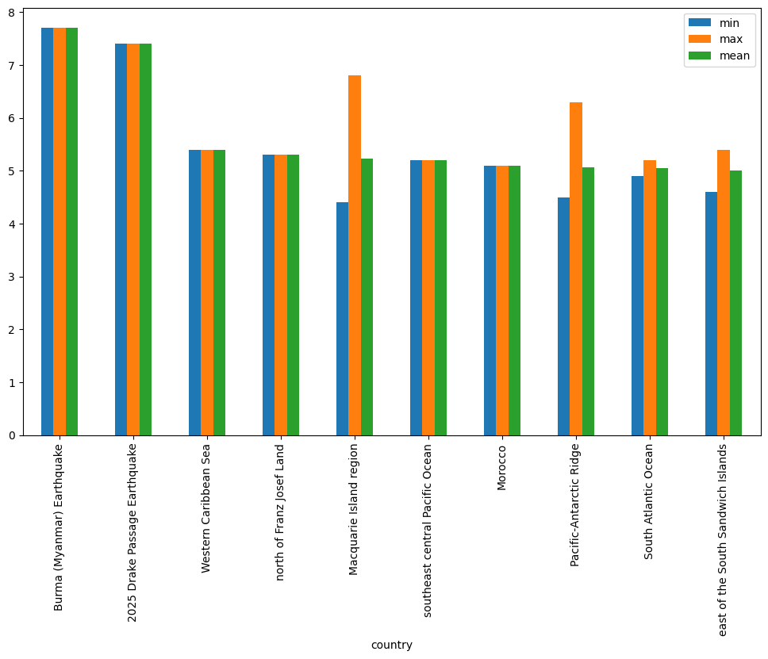
Try it
Group the earthquakes by country and use .aggregate(['min', 'max', 'mean']) on the mag column to get all three statistics at once. Then sort by the mean magnitude in descending order and grab the top 10 countries.
Transformation#
The key difference between aggregation and transformation is that aggregation returns a smaller object than the original, indexed by the group keys, while transformation returns an object with the same index (and same size) as the original object. Groupby + transformation is used when applying an operation that requires information about the whole group.
In this example, we standardize the earthquakes in each country so that the distribution has zero mean and unit variance. We do this by first defining a function called standardize and then passing it to the transform method.
I admit that I don’t know why you would want to do this. transform makes more sense to me in the context of time grouping operation. See below for another example.
def standardize(x):
return (x - x.mean())/x.std()
mag_standardized_by_country = gb.mag.transform(standardize)
mag_standardized_by_country.head()
id
us6000qkt1 0.668464
us6000qksf 0.419407
us6000qks2 2.157996
us6000qkrz 0.642692
us6000qks0 0.909743
Name: mag, dtype: float64
Try it
Define a function standardize(x) that returns (x - x.mean()) / x.std(). Use it with df.groupby('country').mag.transform(standardize) and plot a histogram of the result — magnitudes should now be approximately centered on zero within each country.
Time Grouping#
We already saw how pandas has a strong built-in understanding of time. This capability is even more powerful in the context of groupby. With datasets indexed by a pandas DateTimeIndex, we can easily group and resample the data using common time units.
To get started, let’s load the timeseries data we already explored in past lessons.
import pooch
import pandas as pd
POOCH = pooch.create(
path=pooch.os_cache("noaa-data"),
base_url="doi:10.5281/zenodo.5553029/",
registry={
"HEADERS.txt": "md5:2a306ca225fe3ccb72a98953ded2f536",
"CRND0103-2016-NY_Millbrook_3_W.txt": "md5:eb69811d14d0573ffa69f70dd9c768d9",
"CRND0103-2017-NY_Millbrook_3_W.txt": "md5:b911da727ba1bdf26a34a775f25d1088",
"CRND0103-2018-NY_Millbrook_3_W.txt": "md5:5b61bc687261596eba83801d7080dc56",
},
)
with open(POOCH.fetch("HEADERS.txt")) as fp:
headers = fp.read().split("\n")[1].split(" ")
dframes = []
for year in range(2016, 2019):
fname = f"CRND0103-{year}-NY_Millbrook_3_W.txt"
df = pd.read_csv(POOCH.fetch(fname), parse_dates=[1],
names=headers, header=None, sep=r"\s+",
na_values=[-9999.0, -99.0])
dframes.append(df)
df = pd.concat(dframes)
df = df.set_index("LST_DATE")
df.head()
Downloading file 'HEADERS.txt' from 'doi:10.5281/zenodo.5553029/HEADERS.txt' to '/home/runner/.cache/noaa-data'.
Downloading file 'CRND0103-2016-NY_Millbrook_3_W.txt' from 'doi:10.5281/zenodo.5553029/CRND0103-2016-NY_Millbrook_3_W.txt' to '/home/runner/.cache/noaa-data'.
Downloading file 'CRND0103-2017-NY_Millbrook_3_W.txt' from 'doi:10.5281/zenodo.5553029/CRND0103-2017-NY_Millbrook_3_W.txt' to '/home/runner/.cache/noaa-data'.
Downloading file 'CRND0103-2018-NY_Millbrook_3_W.txt' from 'doi:10.5281/zenodo.5553029/CRND0103-2018-NY_Millbrook_3_W.txt' to '/home/runner/.cache/noaa-data'.
| WBANNO | CRX_VN | LONGITUDE | LATITUDE | T_DAILY_MAX | T_DAILY_MIN | T_DAILY_MEAN | T_DAILY_AVG | P_DAILY_CALC | SOLARAD_DAILY | ... | SOIL_MOISTURE_10_DAILY | SOIL_MOISTURE_20_DAILY | SOIL_MOISTURE_50_DAILY | SOIL_MOISTURE_100_DAILY | SOIL_TEMP_5_DAILY | SOIL_TEMP_10_DAILY | SOIL_TEMP_20_DAILY | SOIL_TEMP_50_DAILY | SOIL_TEMP_100_DAILY | ||
|---|---|---|---|---|---|---|---|---|---|---|---|---|---|---|---|---|---|---|---|---|---|
| LST_DATE | |||||||||||||||||||||
| 2016-01-01 | 64756 | 2.422 | -73.74 | 41.79 | 3.4 | -0.5 | 1.5 | 1.3 | 0.0 | 1.69 | ... | 0.233 | 0.204 | 0.155 | 0.147 | 4.2 | 4.4 | 5.1 | 6.0 | 7.6 | NaN |
| 2016-01-02 | 64756 | 2.422 | -73.74 | 41.79 | 2.9 | -3.6 | -0.4 | -0.3 | 0.0 | 6.25 | ... | 0.227 | 0.199 | 0.152 | 0.144 | 2.8 | 3.1 | 4.2 | 5.7 | 7.4 | NaN |
| 2016-01-03 | 64756 | 2.422 | -73.74 | 41.79 | 5.1 | -1.8 | 1.6 | 1.1 | 0.0 | 5.69 | ... | 0.223 | 0.196 | 0.151 | 0.141 | 2.6 | 2.8 | 3.8 | 5.2 | 7.2 | NaN |
| 2016-01-04 | 64756 | 2.422 | -73.74 | 41.79 | 0.5 | -14.4 | -6.9 | -7.5 | 0.0 | 9.17 | ... | 0.220 | 0.194 | 0.148 | 0.139 | 1.7 | 2.1 | 3.4 | 4.9 | 6.9 | NaN |
| 2016-01-05 | 64756 | 2.422 | -73.74 | 41.79 | -5.2 | -15.5 | -10.3 | -11.7 | 0.0 | 9.34 | ... | 0.213 | 0.191 | 0.148 | 0.138 | 0.4 | 0.9 | 2.4 | 4.3 | 6.6 | NaN |
5 rows × 28 columns
This timeseries has daily resolution, and the daily plots are somewhat noisy.
df.T_DAILY_MEAN.plot()
<Axes: xlabel='LST_DATE'>
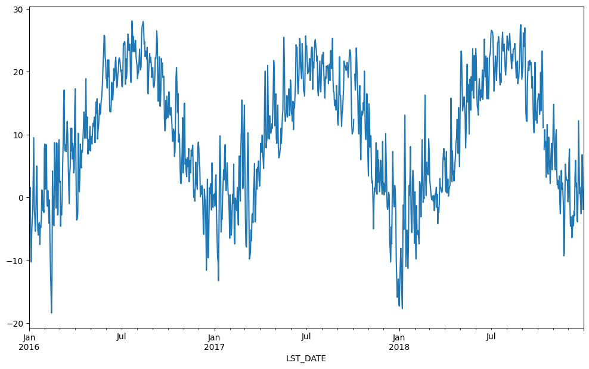
A common way to analyze such data in climate science is to create a “climatology,” which contains the average values in each month or day of the year. We can do this easily with groupby. Recall that df.index is a pandas DateTimeIndex object.
df.index
DatetimeIndex(['2016-01-01', '2016-01-02', '2016-01-03', '2016-01-04',
'2016-01-05', '2016-01-06', '2016-01-07', '2016-01-08',
'2016-01-09', '2016-01-10',
...
'2018-12-22', '2018-12-23', '2018-12-24', '2018-12-25',
'2018-12-26', '2018-12-27', '2018-12-28', '2018-12-29',
'2018-12-30', '2018-12-31'],
dtype='datetime64[us]', name='LST_DATE', length=1096, freq=None)
df.index.month
Index([ 1, 1, 1, 1, 1, 1, 1, 1, 1, 1,
...
12, 12, 12, 12, 12, 12, 12, 12, 12, 12],
dtype='int32', name='LST_DATE', length=1096)
monthly_climatology = df.select_dtypes(include='number').groupby(df.index.month).mean()
monthly_climatology
| WBANNO | CRX_VN | LONGITUDE | LATITUDE | T_DAILY_MAX | T_DAILY_MIN | T_DAILY_MEAN | T_DAILY_AVG | P_DAILY_CALC | SOLARAD_DAILY | ... | SOIL_MOISTURE_10_DAILY | SOIL_MOISTURE_20_DAILY | SOIL_MOISTURE_50_DAILY | SOIL_MOISTURE_100_DAILY | SOIL_TEMP_5_DAILY | SOIL_TEMP_10_DAILY | SOIL_TEMP_20_DAILY | SOIL_TEMP_50_DAILY | SOIL_TEMP_100_DAILY | ||
|---|---|---|---|---|---|---|---|---|---|---|---|---|---|---|---|---|---|---|---|---|---|
| LST_DATE | |||||||||||||||||||||
| 1 | 64756.0 | 2.488667 | -73.74 | 41.79 | 2.924731 | -7.122581 | -2.100000 | -1.905376 | 2.478495 | 5.812258 | ... | 0.240250 | 0.200717 | 0.153667 | 0.160880 | 0.150538 | 0.248387 | 0.788172 | 1.766667 | 3.364516 | NaN |
| 2 | 64756.0 | 2.487882 | -73.74 | 41.79 | 6.431765 | -5.015294 | 0.712941 | 1.022353 | 4.077647 | 8.495882 | ... | 0.247771 | 0.210067 | 0.159176 | 0.163901 | 1.216471 | 1.169412 | 1.278824 | 1.617647 | 2.442353 | NaN |
| 3 | 64756.0 | 2.488667 | -73.74 | 41.79 | 7.953763 | -3.035484 | 2.455914 | 2.643011 | 2.788172 | 13.211290 | ... | 0.228624 | 0.203634 | 0.157817 | 0.160366 | 3.450538 | 3.400000 | 3.372043 | 3.480645 | 3.777419 | NaN |
| 4 | 64756.0 | 2.488667 | -73.74 | 41.79 | 14.793333 | 1.816667 | 8.302222 | 8.574444 | 2.396667 | 15.295889 | ... | 0.214078 | 0.195844 | 0.153922 | 0.158100 | 9.415556 | 9.117778 | 8.455556 | 7.618889 | 6.670000 | NaN |
| 5 | 64756.0 | 2.488667 | -73.74 | 41.79 | 21.235484 | 8.460215 | 14.850538 | 15.121505 | 3.015054 | 17.288602 | ... | 0.204796 | 0.187097 | 0.148892 | 0.155720 | 16.934409 | 16.640860 | 15.612903 | 14.208602 | 12.455914 | NaN |
| 6 | 64756.0 | 2.488667 | -73.74 | 41.79 | 25.627778 | 11.837778 | 18.733333 | 19.026667 | 3.053333 | 21.913333 | ... | 0.136933 | 0.135211 | 0.129422 | 0.152722 | 22.403333 | 22.126667 | 20.956667 | 19.448889 | 17.552222 | NaN |
| 7 | 64756.0 | 2.488667 | -73.74 | 41.79 | 28.568817 | 15.536559 | 22.054839 | 22.012903 | 3.865591 | 21.570645 | ... | 0.105817 | 0.095204 | 0.114430 | 0.150014 | 25.448387 | 25.318280 | 24.163441 | 22.746237 | 21.068817 | NaN |
| 8 | 64756.0 | 2.488667 | -73.74 | 41.79 | 27.473118 | 15.351613 | 21.410753 | 21.378495 | 4.480645 | 18.493333 | ... | 0.156161 | 0.132333 | 0.128839 | 0.158800 | 24.758065 | 24.829032 | 24.116129 | 23.325806 | 22.301075 | NaN |
| 9 | 64756.0 | 2.488667 | -73.74 | 41.79 | 24.084444 | 12.032222 | 18.057778 | 17.866667 | 3.730000 | 13.625667 | ... | 0.136911 | 0.126456 | 0.121378 | 0.154000 | 21.028889 | 21.168889 | 20.921111 | 20.834444 | 20.707778 | NaN |
| 10 | 64756.0 | 2.548882 | -73.74 | 41.79 | 18.127473 | 5.757143 | 11.938462 | 11.952747 | 3.228261 | 9.442527 | ... | 0.155297 | 0.128473 | 0.120220 | 0.144618 | 14.872527 | 15.056044 | 15.379121 | 16.159341 | 17.059341 | NaN |
| 11 | 64756.0 | 2.555333 | -73.74 | 41.79 | 9.586667 | -1.375556 | 4.097778 | 4.277778 | 3.991111 | 6.350111 | ... | 0.226111 | 0.212211 | 0.164789 | 0.163122 | 6.777778 | 6.975556 | 7.658889 | 9.048889 | 10.864444 | NaN |
| 12 | 64756.0 | 2.555333 | -73.74 | 41.79 | 3.569892 | -5.704301 | -1.069892 | -0.850538 | 2.791398 | 4.708602 | ... | 0.259608 | 0.221301 | 0.171849 | 0.177194 | 1.831183 | 2.009677 | 2.647312 | 3.910753 | 5.710753 | NaN |
12 rows × 27 columns
monthly_climatology.T_DAILY_MAX.plot()
<Axes: xlabel='LST_DATE'>
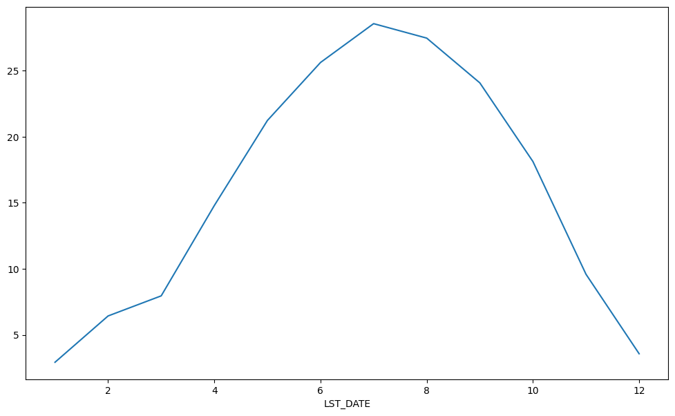
Each row in this new dataframe represents the average values for the months (1=January, 2=February, etc.)
We can apply more customized aggregations, as with any groupby operation. Below we keep the mean of the mean, max of the max, and min of the min for the temperature measurements.
monthly_T_climatology = df.groupby(df.index.month).aggregate({'T_DAILY_MEAN': 'mean',
'T_DAILY_MAX': 'max',
'T_DAILY_MIN': 'min'})
monthly_T_climatology
| T_DAILY_MEAN | T_DAILY_MAX | T_DAILY_MIN | |
|---|---|---|---|
| LST_DATE | |||
| 1 | -2.100000 | 16.9 | -26.0 |
| 2 | 0.712941 | 24.9 | -24.7 |
| 3 | 2.455914 | 26.8 | -16.5 |
| 4 | 8.302222 | 30.6 | -11.3 |
| 5 | 14.850538 | 33.4 | -1.6 |
| 6 | 18.733333 | 33.8 | 3.4 |
| 7 | 22.054839 | 35.7 | 8.2 |
| 8 | 21.410753 | 34.5 | 6.0 |
| 9 | 18.057778 | 32.7 | 0.3 |
| 10 | 11.938462 | 29.4 | -4.1 |
| 11 | 4.097778 | 22.2 | -15.9 |
| 12 | -1.069892 | 16.9 | -21.8 |
monthly_T_climatology.plot(marker='o')
<Axes: xlabel='LST_DATE'>
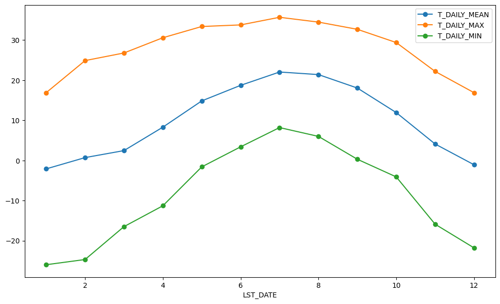
If we want to do it on a finer scale, we can group by day of year.
daily_T_climatology = df.groupby(df.index.dayofyear).aggregate({'T_DAILY_MEAN': 'mean',
'T_DAILY_MAX': 'max',
'T_DAILY_MIN': 'min'})
daily_T_climatology.plot(marker='.')
<Axes: xlabel='LST_DATE'>
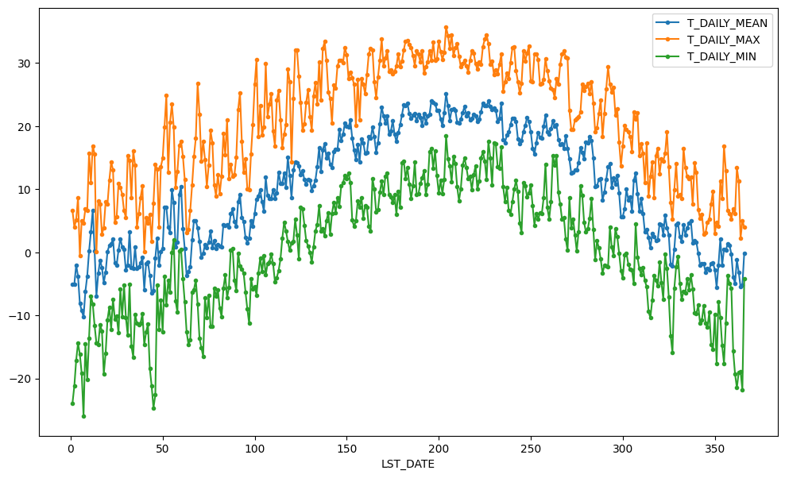
Calculating anomalies#
A common mode of analysis in climate science is to remove the climatology from a signal to focus only on the “anomaly” values. This can be accomplished with transformation.
def remove_climatology(x):
return x - x.mean()
anomaly = df.groupby(df.index.month).T_DAILY_MEAN.transform(remove_climatology)
anomaly
LST_DATE
2016-01-01 3.600000
2016-01-02 1.700000
2016-01-03 3.700000
2016-01-04 -4.800000
2016-01-05 -8.200000
...
2018-12-27 1.269892
2018-12-28 7.869892
2018-12-29 5.669892
2018-12-30 -0.830108
2018-12-31 2.169892
Name: T_DAILY_MEAN, Length: 1096, dtype: float64
anomaly.plot()
<Axes: xlabel='LST_DATE'>
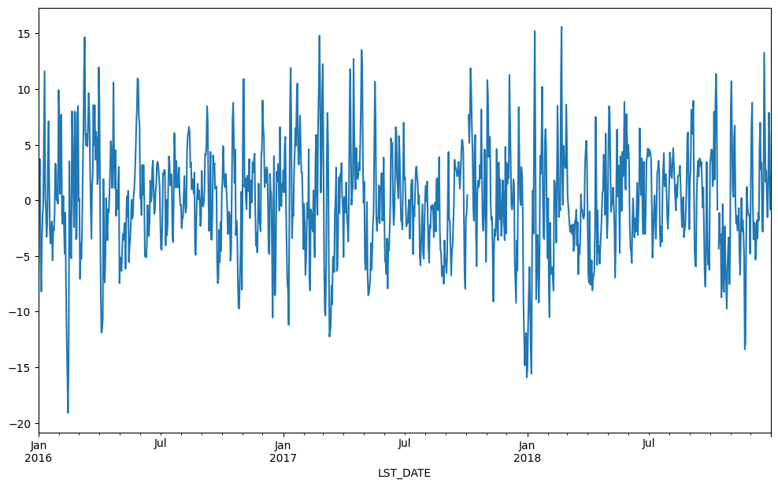
Try it
Compute a daily climatology of T_DAILY_MEAN by grouping on df.index.dayofyear and taking the mean. Plot it as a line chart. Compare its shape to the monthly climatology shown above — the daily curve will be noisier but pick up sub-monthly structure.
Resampling#
We met resample at the end of the previous notebook (Pandas Fundamentals) as a way to change a time series’ resolution. Now that we understand groupby, we can name what resample actually is: a groupby over time bins. Instead of grouping rows by the value in a column, it groups them by which time interval they fall into — each month, each year, and so on — then applies an aggregation. It’s the same split-apply-combine idea, just with time as the grouping key.
The bin size is given using pandas offset-alias syntax (e.g. 'ME' = month end, 'YE' = year end). Below we resample to a monthly frequency, taking the mean over each month.
df.select_dtypes(include='number').resample('ME').mean().plot(y='T_DAILY_MEAN', marker='o')
<Axes: xlabel='LST_DATE'>
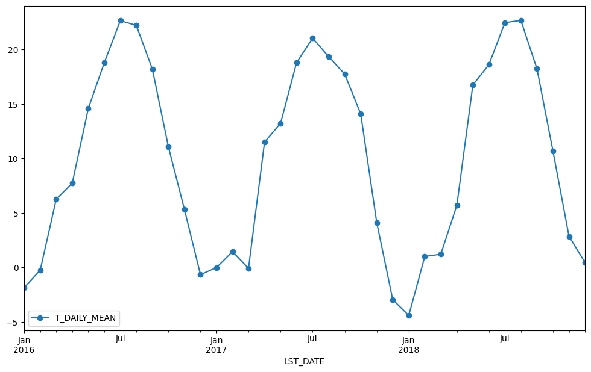
df.select_dtypes(include='number').resample('ME').std().plot(y='T_DAILY_MEAN', marker='o')
<Axes: xlabel='LST_DATE'>
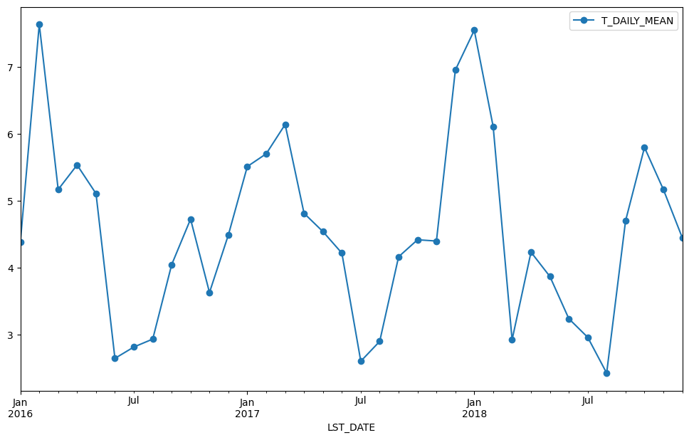
Just like with groupby, we can apply any aggregation function to our resample operation.
df.select_dtypes(include='number').resample('ME').max().plot(y='T_DAILY_MAX', marker='o')
<Axes: xlabel='LST_DATE'>
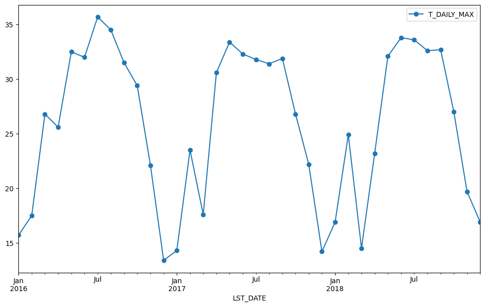
Try it
Use df.resample('YE').max() to get the yearly maximum and plot T_DAILY_MAX against the resulting yearly index. Compare with the monthly resampling shown above — what trend, if any, do you see?
Rolling Operations#
The final category of operations applies to “rolling windows”. (See rolling documentation.) We specify a function to apply over a moving window along the index. We specify the size of the window and, optionally, the weights. We also use the keyword center to tell pandas whether to center the operation around the midpoint of the window.
df.rolling(30, center=True).T_DAILY_MEAN.mean().plot()
df.rolling(30, center=True, win_type='triang').T_DAILY_MEAN.mean().plot()
<Axes: xlabel='LST_DATE'>
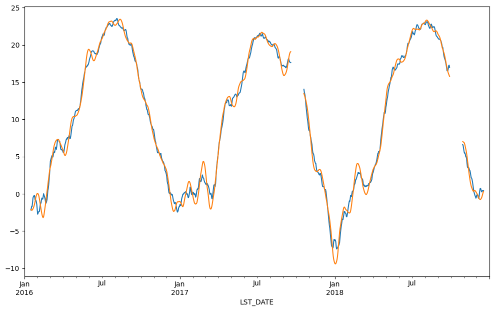
df.rolling(30, center=True).T_DAILY_MEAN.max().plot()
<Axes: xlabel='LST_DATE'>
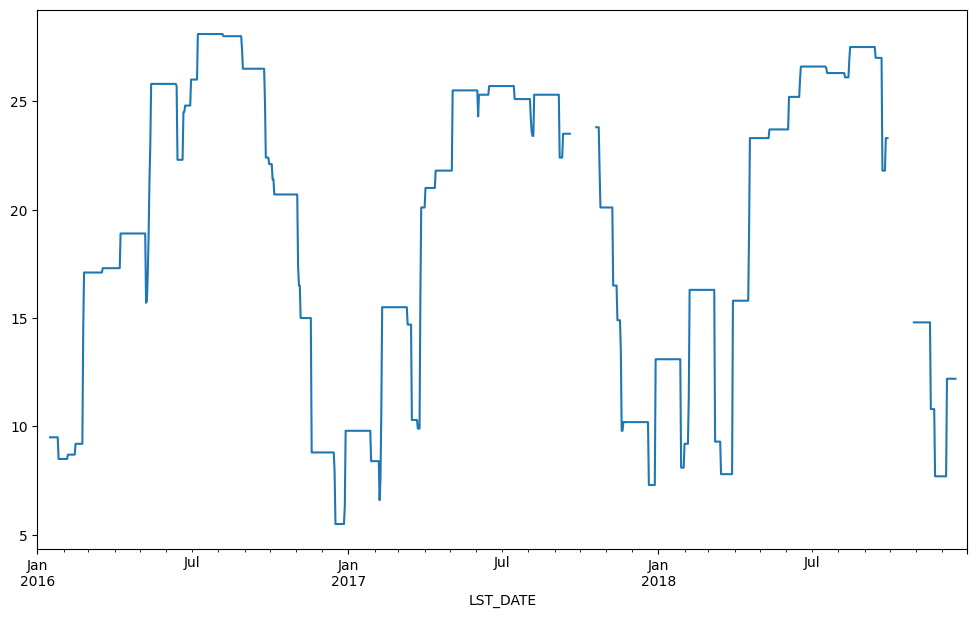
Try it
Use df.rolling(7, center=True).T_DAILY_MEAN.mean() to compute a 7-day moving average and plot it. Then overlay the raw daily series on the same axes (call .plot() twice on the same axes, or use fig, ax = plt.subplots() and call .plot(ax=ax) for each). What does smoothing reveal that the raw data hides?
Recap#
This notebook was all about split–apply–combine:
groupbyon a column — grouping earthquakes by country, then summarizing each group with aggregation (count,mean,.aggregate([...])).Transformation — returning a value for every row using whole-group information (standardizing within each group; removing a climatology to get anomalies).
Time grouping — grouping by parts of a
DatetimeIndexto build a climatology.resample— agroupbyover time bins, for changing time resolution.rolling— moving-window calculations for smoothing.
These same groupby / resample / rolling ideas carry straight into the next section, Xarray, where they work on labelled N-dimensional arrays.